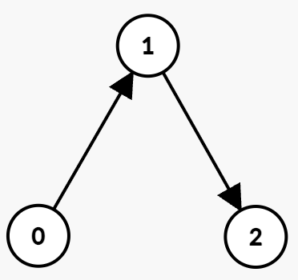
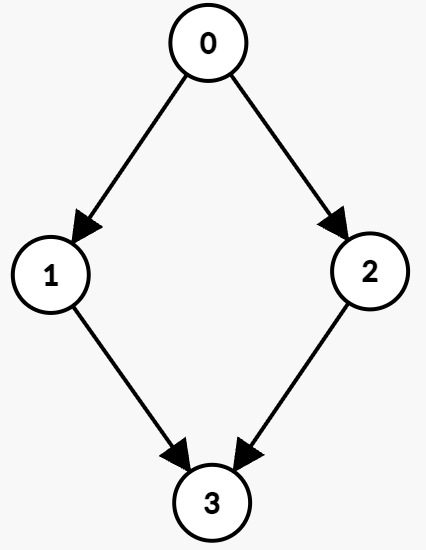
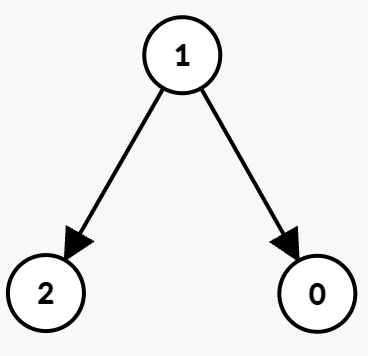

| Category | Difficulty | Likes | Dislikes |
|---|---|---|---|
| Algorithms | Medium | 92 | 4 |
You are given an integer n and a directed graph with n nodes labeled from 0 to n - 1. This is represented by a 2D array edges, where edges[i] = [ui, vi, starti, endi] indicates an edge from node ui to vi that can only be used at any integer time t such that starti <= t <= endi.
You start at node 0 at time 0.
In one unit of time, you can either:
t satisfies starti <= t <= endi.Return the minimum time required to reach node n - 1. If it is impossible, return -1.
Example 1:
Input: n = 3, edges = [[0,1,0,1],[1,2,2,5]]
Output: 3
Explanation:

The optimal path is:
t = 0, take the edge (0 → 1) which is available from 0 to 1. You arrive at node 1 at time t = 1, then wait until t = 2.t = 2, take the edge (1 → 2) which is available from 2 to 5. You arrive at node 2 at time 3.Hence, the minimum time to reach node 2 is 3.
Example 2:
Input: n = 4, edges = [[0,1,0,3],[1,3,7,8],[0,2,1,5],[2,3,4,7]]
Output: 5
Explanation:

The optimal path is:
t = 1, then take the edge (0 → 2) which is available from 1 to 5. You arrive at node 2 at t = 2.t = 4, then take the edge (2 → 3) which is available from 4 to 7. You arrive at node 3 at t = 5.Hence, the minimum time to reach node 3 is 5.
Example 3:
Input: n = 3, edges = [[1,0,1,3],[1,2,3,5]]
Output: -1
Explanation:

Constraints:
1 <= n <= 1050 <= edges.length <= 105edges[i] == [ui, vi, starti, endi]0 <= ui, vi <= n - 1ui != vi0 <= starti <= endi <= 109